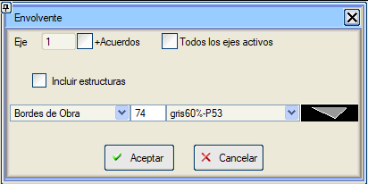

Bu araca Boykesit > Çizimler > Proje Sınırı menüsünden ulaşabiliriz.
Bir eksenin veya tüm aktif eksenlerin bir dış sınırını, her eksenin sınır alanı olarak İnşaat Sınırları'nı kullanarak oluşturur: yarma şev başlarını, dolgu şev eteklerini ve dökülme konilerini takip eder; kavşak ve dönel kavşak kollarını dahil eder ve viyadüklerin konsol bölgelerini hariç tutar. Yani, Eşyükselti Eğrilerini Entegre Et aracında oluşturulan çizgilerin aynısıdır.
İnşaat Sınırları + Zayıf Zemin Kazısı modu, zayıf zemin kazısının sınırlarını dikkate alır.
Alternatif olarak, alan olarak kamulaştırma paylarından tanımlanan Kamulaştırma Sınırları'nı kullanabilir.

Mevcut eksen veya tüm eksenler için oluşturulabilir.
Mevcut ekseni seçme durumunda, aynı eksene, diğer eksenlerle olan kavşak veya dönel kavşaklardaki kollarının kapladığı alanı şu seçenekle eklenebilir: + Kavşak Kolları
Sanat yapılarını dahil et seçeneği seçildiğinde, viyadüklerin kenarları da kullanılır.
Mevcut ekseni seçme durumunda, aynı eksene, diğer eksenlerle olan kavşak veya dönel kavşaklardaki kollarının kapladığı alanı şu seçenekle eklenebilir: + Kavşak Kolları
Sanat yapılarını dahil et seçeneği seçildiğinde, viyadüklerin kenarları da kullanılır.